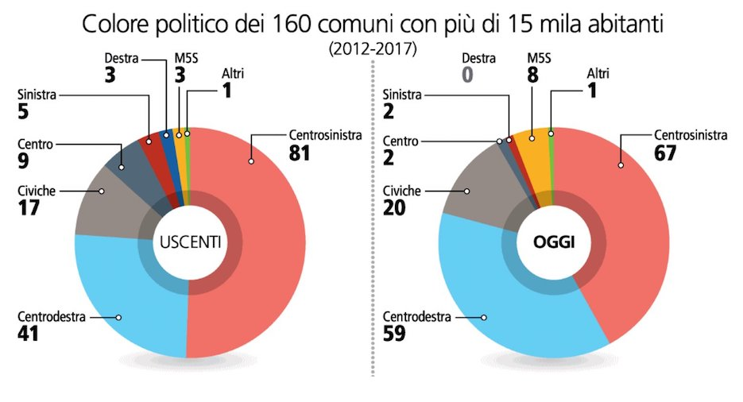

Si consideri il seguente grafico con i risultati delle amministrative 2017 per i grandi comuni confrontati con quelli del 2012.
Analisi
Analizzare il grafico sopra riportato secondo gli aspetti seguenti:Question:- è stata definita chiaramente o è evidente una domanda (o più di una) a cui la visualizzazione risponde?
L'obiettivo della visualizzazione è chiaro: confrontare il numero di comuni aggiudicati alla diverse formazioni politicihe nelle amministrative 2017 rispetto al 2017, considerando i comuni al di sopra dei 15 mila abitanti.
Data:- i dati mostrati sono validi e supportano la domanda?
I dati riportano il numero di comuni per formazione nei due anni.
Si nota una differenza nel numero di comuni: 160 nel 2012 e 159 nel 2017.
Visual:le caratteristiche visuali sono usate appropriatamente?
Riguardo gli aspetti visuali si valuti l’integrità visuale secondo i tre aspetti:
Proportionality:- le misure sono riportate in maniera uniformemente proporzionale?
Da un punto di vista geometrico i valori appaiono riportati in maniera consistentemente proporzionale.
Percettivamente il confronto tra aree e (in parte) angoli risulta alterato.
Utility:- tutti gli elementi presenti nel grafico trasmettono informazioni utili?
L'effetto 3D all'inteno del donut come pure l'ombreggiatura sottostante non portano alcuna informazione utile
La linea di separazione non comunica informazione ma data la scelta del grafico serve ad evitare confusione.
Clarity:- i dati del grafico sono chiaramente identificabili e comprensibili (opportunamente descritti)?
Le etichette (inevitabilmente ripetute) sono vicine al grafico e collegate ragionevolmente, scelta preferibile ad una legenda ma limitata dalla scelta del grafico.
Il grafico riporta molti (8) colori che rischiano di essere poco distinguibili in particolare la presenza di verdi e rossi vicini può essere un problema per osservatori affetti da cecità ai colori.
La distanza e non allineamento degli archi di grafico per i due anni complica l'operazione fondamentale che consiste nel confronto del numero di comuni aggiudicati alle diverse formazioni politiche.
Il valore 0 (zero) relativo alla "Destra" per il 2017 enfatizza la variazione che è visualizzabile altrimenti, vista la scelta della rappresentazione grafica non permette di rappresentare in alcun modo i valori uguali a zero.
Design
Riprogettare la visualizzazione in modo da risolvere i problemi evidenziati nell'analisi.
Una prima soluzione utilizza un diagramma a barre dove per ogni formazione (colore politico) vengono riportati appaiati il numero di comuni conquistati nel 2012 e nel 2017 per agevolare il confronto.
Una seconda soluzione utilizza uno slopegraph.
Una terza soluzione utilizza un dot plot.
Inserire le risposte all'interno del presente file,
in particolare negli elementi <div>
che hanno come classe answer.